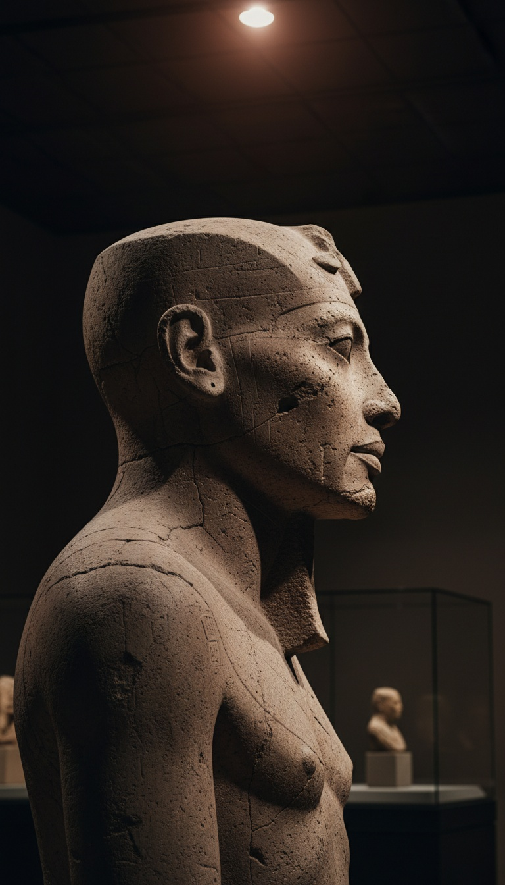

Akhenaten ruled Egypt for 17 years, and when he died, Egypt did not bury him with honors. It spent decades chiseling his name off every monument, striking him from every king list, and referring to him only as "the criminal of Akhetaten." You do not do that to a failed king. You do that to a king who proved something.
Because here is the problem the textbooks step around. Every other pharaoh across 3,000 years of Egyptian art is drawn to the same rigid human template. Only Akhenaten breaks it. His skull elongates backward. His hips widen past male anatomy. His fingers stretch. And his daughters, carved in stone that still sits in Berlin and Cairo today, carry the exact same skull.

The Body That Matches No Pharaoh
Walk into the Egyptian Museum in Cairo and stand in front of the colossal statues of Akhenaten pulled from the Gempaaten temple at Karnak. The skull sweeps back like a teardrop. The face is long, the lips heavy, the belly rounded, the hips flared like a woman's. Nothing else in the museum looks like this. Nothing else in Egypt looks like this.
Egyptian art was not loose. For three millennia, pharaohs were carved to a canonical grid, idealized, broad shouldered, narrow hipped, identical from Narmer to Ramesses. Seneferu looks like Thutmose III looks like Seti I. The template was religious law. Then one king, for one 17 year window around 1353 to 1336 BCE, is depicted as something else entirely, and the moment he dies the template snaps back like it was never broken.
In 2008, Yale physician Irwin Braverman presented Akhenaten's case at the university's historical clinicopathological conference and concluded the pharaoh's anatomy required not one but two separate genetic conditions to explain, a craniosynostosis variant for the skull and a hormonal disorder for the feminized body. Read that again. Modern medicine needed two simultaneous rare mutations in one man just to make his statues biologically possible.
His Daughters Carry the Same Skull
The standard dismissal is that the Amarna style was art, a symbolic choice, a theological statement rendered in stone. That dismissal dies in Berlin.
The Neues Museum holds limestone reliefs of Akhenaten's daughters, and the Ägyptisches Museum's Amarna collection shows the princesses with dramatically elongated skulls, bare, unmistakable, carved in domestic scenes with no ritual function at all. The Ashmolean Museum in Oxford holds a fresco fragment of two princesses from the King's House at Amarna showing the same swept back crania. These are children at play, not gods on thrones.
And the two dismissals on offer cancel each other out. If it was pure artistic symbolism, the Yale doctors wasted a conference diagnosing a drawing. If it was a real genetic condition, then the elongated skulls were physically real, inherited, and confined to one bloodline, which is exactly what the statues have been saying for 3,300 years. Either way, the anatomy stands. The skull in the KV55 tomb in the Valley of the Kings, the skeleton genetically identified in the 2010 JAMA study as Tutankhamun's father, shows a long, flattened dolichocephalic skull. The bone agrees with the stone.
The Papyrus That Counts 36,000 Years
The Museo Egizio in Turin holds a papyrus from the reign of Ramesses II known as the Turin Royal Canon, the most complete king list Egypt ever produced. Tourists know it as a chronology. Almost nobody reads the top of the list.
Before the human pharaohs, the Canon records earlier dynasties of rulers, gods and the Shemsu Hor, the Followers of Horus, reigning for spans that stack into tens of thousands of years, over 36,000 years of rule before the first mortal king. The scribes of Ramesses II, the most powerful court on Earth, wrote non-human rulers into their official state chronology as history, not myth. Manetho, the Egyptian priest who wrote Egypt's history for the Ptolemies in the 3rd century BCE, recorded the same structure, gods first, demigods second, humans last.
Modern medicine needed two simultaneous rare mutations in one man just to make Akhenaten's statues biologically possible. His daughters inherited the skull anyway.
Kingship Was Lowered From Heaven
Egypt was not alone in remembering this. The Sumerian King List, pressed into the Weld-Blundell prism around 1800 BCE and held today in the Ashmolean Museum, opens with one of the most loaded sentences in ancient literature. "When kingship was lowered from heaven, kingship was in Eridu."
Kingship, in the oldest political document on Earth, is not something humans invented. It is something that descended, was installed, and was assigned to chosen lines. The Sumerian tablets name the Anunnaki as the ones who did the choosing, and the antediluvian kings on that list reign for thousands of years each, the same impossible spans the Turin Canon gives Egypt's first rulers. Two civilizations, two languages, two river valleys, one story: the first kings were not us, and the right to rule ran through blood.
Now the incest makes sense. Egyptian pharaohs married sisters and daughters generation after generation, a practice that horrifies modern readers and gets waved off as politics. But if the throne's legitimacy was carried in the blood itself, in something physical that could be diluted, then the marriages were not politics. They were containment.
The Pharaoh Who Fired Every Priest
In year five of his reign, Akhenaten did something no ruler in Egyptian history dared before or after. He shut down the temples of Amun, seized the priesthood's assets, built a new capital at Akhetaten on virgin ground, and declared that he alone communed with the Aten. No priests. No intermediaries. No ritual technology standing between him and the source.
The Great Hymn to the Aten, carved in the tomb of Ay at Amarna, states it in the king's own liturgy: the Aten is known to no one except Akhenaten. Every other pharaoh needed the temple machinery to reach the divine. Akhenaten behaved like a man with a direct line, like the machinery was for people who lacked what he had.
A king with an inherited skull no physician can model, from a bloodline that guarded itself through incest, in a civilization whose own state papyrus says its first rulers were not human, announces that he personally is the sole point of contact with the power above. That is not theology. That is a claim of descent.
The Erasure
What Egypt did next is the tell. Under Horemheb and the kings who followed, Akhetaten was demolished down to its mudbrick foundations. His statues were smashed and buried at Karnak, where they stayed hidden until excavators pulled them out in 1925. The Abydos King List, carved for Seti I around 1290 BCE, jumps straight from Amenhotep III to Horemheb as if four rulers never existed.
Egypt kept records obsessively. It preserved the names of kings who lost wars, kings who ruled months, kings who accomplished nothing. It deleted exactly one dynasty's memory root and branch, the one with the skulls.
Damnatio memoriae is not punishment for heresy. Heretics get refuted. Erasure is what you do to information, and Akhenaten's body, his bloodline, and his claim of direct contact were the information.
The skull from KV55 is still in Cairo. The daughters' reliefs are still in Berlin and Oxford. The Turin Canon still lists 36,000 years of rulers who were not men, and the Ashmolean prism still says kingship came down from somewhere else. Every piece is sitting in a museum right now, cataloged, lit, and never placed side by side in any official exhibit.
Egypt had 3,000 years of kings and erased one. Not the cruel ones. Not the failures. The one whose bones matched the statues. So the question was never whether Akhenaten was different. The stone and the bone already settled that. The question is what the priests of Amun understood the moment he died, and why the answer had to be destroyed instead of answered. What were they afraid he proved? Say it in the comments. Someone has to.
Before you go
7 books the Vatican doesn't want you reading. Free PDF, the texts they cut, with sources. Joined by 140+ Inner Circle members.
No spam. Unsubscribe anytime.
Go deeper
The Hidden Canon, Vol. I, Enoch. Jubilees. Thomas. Mary. Judas. 90 pages, 14 chapters, every receipt cited. The books your Bible quietly removed.
Read the Canon →Books that informed this investigation
- The Sumerians (Kramer)
- Babylon: Mesopotamia and the Birth of Civilization (Kriwaczek)
- The Ancient Near East (Hallo & Simpson)
As an Amazon Associate, Hidden Epoch earns from qualifying purchases. Cost to you: nothing.
Research safely
The VPN we use to research without being tracked. First 3 months free.
Get NordVPN →